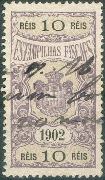
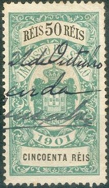
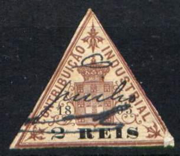

('ESTAMPILHA FISCAL' and 'CONTRIBUICAO INDUSTRIAL' overprint)
Return To Catalogue - Portugal
Note: on my website many of the
pictures can not be seen! They are of course present in the
catalogue;
contact me if you want to purchase the catalogue.
Examples:

('ESTAMPILHA FISCAL' and 'CONTRIBUICAO INDUSTRIAL' overprint)

('CONTRIBUCAO INDUSTRIAL' 1911 fiscal stamp)
(Sorry, no picture available yet)
The values 50 r, 100 r, 300 r, 500 r and 1000 r were issued (all in lilac).

(50 Rs image obtained thanks to Rainer Schulz)
The values 20 r, 50 r, 200 r, 300 r and 1000 r were issued (all in lilac). Is the blue stamp a decoloration?
('IMPOSTO DO SELLO', examples of 1868 and 1873)


These stamps were issued in 1870 with the value
on a white background in the following value: 50 r green and red,
100 r, 150 r, 200 r, 250 r, 400 r, 500 r, 800 r (all in red and
green), 1000 r, 2000 r, 3000 r, 4000 r, 5000 r (all in brown and
red), 10000 r, 20000 r, 40000 r and 50000 r (all in lilac and
green).
A slightly different design (with the value on a yellow
background) was issued in 1880 in the colours: 50 r green and
red, 100 r, 150 r, 200 r, 250 r, 400 r, 500 r, 800 r (all in red
and brown), 1000 r, 2000 r, 3000 r, 4000 r, 5000 r (all in brown
and red), 10000 r, 20000 r, 30000 r, 40000 r and 50000 r (all in
lilac and green). A misprint(?) 500 r red and green exists.
Another fiscal stamp for the consulate in Brazil seems to exist
2000 r blue (I have never seen this stamp).

(Image obtained thanks to Rainer Schulz)
In this design were issued:
With date 1894: 2 r, 5 r, 10 r, 20 r, 30 r ,40
r, 50 r, 60 r, 70 r, 80 r, 90 r (all in blue and black), 100 r
green and black, 200 r blue and black, 300 r, 400 r, 500 r, 600
r, 700 r, 800 r, 900 r (all in green and black), 1000 r, 2000 r,
3000 r, 4000 r, 5000 r (all in red and black), 10000 r and 20000
r (both in violet and black).
With date 1895: 2 r, 5 r (both in brown and
black), 10 r, 20 r, 30 r ,40 r, 50 r, 60 r, 70 r, 80 r, 90 r (all
in blue and black), 100 r, 200 r, 300 r, 400 r, 500 r, 600 r, 700
r, 800 r, 900 r (all in green and black), 1000 r, 2000 r, 3000 r,
4000 r, 5000 r (all in red and black), 10000 r and 20000 r (both
in violet and black).
With date 1896, 1897, 1898 or 1899: 2 r, 5 r
(both in brown and black), 10 r, 20 r, 30 r ,40 r, 50 r, 60 r, 70
r, 80 r, 90 r (all in blue and black), 100 r, 200 r, 300 r, 400
r, 500 r, 600 r, 700 r, 800 r, 900 r (all in green and black),
1000 r, 2000 r, 3000 r, 4000 r, 5000 r (all in red and black),
10000 r and 20000 r (both in violet and black).
With date 1900: 2 r, 5 r (both in green and
black), 10 r, 20 r, 30 r ,40 r, 50 r, 60 r, 70 r, 80 r, 90 r (all
in brown and black), 100 r, 200 r, 300 r, 400 r, 500 r, 600 r,
700 r, 800 r, 900 r (all in violet and black), 1000 r, 2000 r,
3000 r, 4000 r, 5000 r (all in grey and black), 10000 r and 20000
r (both in orange and black).
With date 1901: 2 r, 5 r (both in red and
black), 10 r, 20 r, 30 r ,40 r, 50 r, 60 r, 70 r, 80 r, 90 r (all
in green and black), 100 r, 200 r, 300 r, 400 r, 500 r, 600 r,
700 r, 800 r, 900 r (all in brown and black), 1000 r, 2000 r,
3000 r, 4000 r, 5000 r (all in red and black), 10000 r and 20000
r (both in lilac and black).
Other stamps with 'CONTRIBUCAO INDUSTRIAL' were issued from 1903 onwards.
{kind=link}